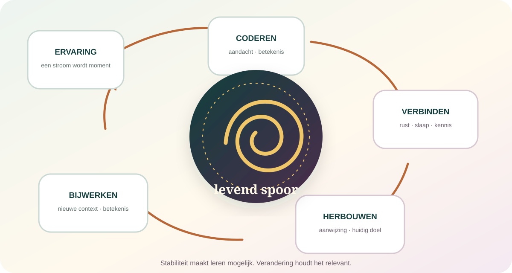

De kern in gewone taal
Geheugen bewaart het verleden niet intact. Het houdt het verleden bruikbaar.
Wat je meemaakt wordt selectief opgenomen, verbonden met bestaande kennis, tijdens rust verder verwerkt en later vanuit de huidige situatie opnieuw opgebouwd. Daardoor kun je leren, plannen, herkennen en jezelf door de tijd volgen. Hetzelfde systeem kan details verwisselen, gaten invullen en een herinnering laten veranderen. Dat is geen defect naast het “echte” geheugen. Flexibiliteit is een deel van hoe geheugen werkt.
Een herinnering wordt samengesteld uit sporen, kennis, verwachtingen en de vraag van dit moment.
Een systeem dat niets loslaat, raakt vol met ruis, concurrentie en informatie die niet meer relevant is.
Een herinnering kan levendig, oprecht en emotioneel waarachtig zijn zonder ieder detail historisch correct te bewaren.
Je haalt een herinnering niet uit een lade. Je bouwt haar opnieuw.
De populaire camera-metafoor suggereert dat een gebeurtenis volledig wordt opgeslagen en later afgespeeld. In werkelijkheid begint selectie al bij de ervaring zelf. Je aandacht mist details, een gebeurtenis krijgt grenzen, onderdelen worden over meerdere hersensystemen verdeeld en nieuwe kennis verandert wat later gemakkelijk kan worden teruggevonden.

Reconstructief betekent niet onbetrouwbaar: meestal helpt voorkennis je juist om snel en behoorlijk nauwkeurig te begrijpen wat er gebeurde. Het probleem ontstaat wanneer ontbrekende details en gemaakte gevolgtrekkingen later hetzelfde gevoel van vertrouwdheid krijgen.
“Mijn geheugen” is een familie van verschillende vermogens.
Werkgeheugen
Wat houd je tijdelijk beschikbaar?
Een telefoonnummer, een tussenstap of het begin van een zin terwijl je het einde verwerkt. Capaciteit en aandacht zijn beperkt.
Episodisch
Wat gebeurde waar en wanneer?
Een beleefde gebeurtenis met tijd, plaats en een eerste-persoonsperspectief — van een ontbijt tot een afscheid.
Semantisch
Wat weet je zonder het leermoment?
Woorden, feiten, concepten en kennis over de wereld, vaak losgeraakt van de specifieke ervaring waarin je ze leerde.
Procedureel
Wat kan je lichaam uitvoeren?
Vaardigheden en routines zoals fietsen of typen, die je moeilijk volledig in woorden kunt uitleggen.
Emotioneel leren
Wat voelt veilig of dreigend?
Ervaringen kunnen latere aandacht en reacties sturen zonder dat je altijd een helder verhaal kunt oproepen.
Autobiografisch
Welk verleden vormt jouw leven?
Persoonlijke gebeurtenissen en algemene levenskennis worden één verhaal over wie je was en bent.
Deze systemen steunen op overlappende netwerken. De hippocampus is belangrijk voor het binden van elementen van episodische gebeurtenissen, maar is geen opslagplaats waar “jouw verleden” als complete film ligt.
Het geheugen begint al vóór je denkt dat je iets onthoudt.
Het brein deelt een voortdurende stroom op in gebeurtenissen. Een nieuwe ruimte, ander doel, onverwachte wending of duidelijke tijdsprong kan een grens vormen. Binnen één gebeurtenis worden details sterker aan elkaar gekoppeld; over grenzen heen raakt de samenhang gemakkelijker zoek. Daarom herinner je soms de onderdelen van een avond, maar niet meer precies in welke volgorde.
Selectie
Aandacht bepaalt welke delen voldoende worden verwerkt om later kans te maken.
Context
Plaats, stemming, doel en zintuiglijke omgeving geven een gebeurtenis haar achtergrond.
Betekenis
Nieuwe informatie hecht beter wanneer ze verbinding krijgt met wat je al weet.
Grens
Een overgang sluit één episode af en maakt ruimte voor een volgende.
Dat iets niet werd opgeslagen betekent niet dat het je “niet genoeg kon schelen”. Stress, vermoeidheid, pijn, overprikkeling, medicatie en verdeelde aandacht beïnvloeden wat überhaupt beschikbaar kwam voor codering.
Wanneer je stopt met leren, is het geheugen nog niet klaar.
Nieuwe herinneringen blijven aanvankelijk kwetsbaar. Tijdens rust en slaap worden patronen opnieuw geactiveerd en over hippocampale en corticale netwerken verbonden. Onderzoek wijst op een gecoördineerd samenspel van trage oscillaties, slaapspoelen en hippocampale ripples. Dat betekent niet dat ieder detail ’s nachts letterlijk wordt gekopieerd. Consolidatie kan zowel stabiliseren als samenvatten en integreren.
Een nieuw spoor wordt minder kwetsbaar.
Cellulaire en netwerkprocessen ondersteunen dat recente informatie later opnieuw beschikbaar kan worden.
Een gebeurtenis wordt deel van bestaande kennis.
Overeenkomsten worden sterker, details kunnen naar de achtergrond verdwijnen en een regel of schema kan ontstaan.
Slaap is geen geheugenhack: een meta-analyse uit 2024 vond een klein gemiddeld nadeel van beperkte slaap voor nieuwe geheugenvorming. Dat rechtvaardigt geen perfecte slaapregels, dure gadgets of de belofte dat één specifieke slaapfase alles oplost.
Niet kunnen oproepen is niet altijd hetzelfde als kwijt zijn.
Een naam kan afwezig lijken en minuten later plots opduiken. Een geur kan een scène oproepen waar een directe vraag niets vond. Herinneren hangt af van aanwijzingen, context, concurrentie met andere kennis en de manier waarop de vraag wordt gesteld. Prestaties op één moment vertellen dus niet exact wat er nog ergens in het systeem aanwezig is.
Wat opent het spoor?
Een plaats, melodie, geur, foto of eerste letter kan andere onderdelen van een patroon activeren.
Welke buur dringt voor?
Verwante namen en gebeurtenissen kunnen het gezochte spoor blokkeren of ermee vermengd raken.
Waarom herinner je nu?
Troost zoeken, bewijs leveren, een beslissing nemen of een verhaal vertellen verandert welke details relevant worden.
Wat maakt het brein compleet?
Fragmenten worden met kennis en gevolgtrekkingen tot een samenhangende scène verbonden.
Misschien onthoud je niet vooral om terug te kijken, maar om vooruit te kunnen.
Bij het voorstellen van een toekomstige gebeurtenis worden details uit eerdere ervaringen flexibel gecombineerd: een bekende plaats, een andere persoon, een mogelijk gevoel, een nieuw verloop. Episodisch herinneren en toekomstverbeelding gebruiken deels overlappende processen. De prijs van die flexibiliteit is dat hetzelfde systeem ook plausibele maar niet-gebeurde combinaties kan maken.
Je verleden levert voorbeelden, waarschuwingen, routes en losse onderdelen. Verbeelding maakt daar scenario’s van waarmee je kunt kiezen vóór de werkelijkheid je dwingt.
Dat maakt herinneren creatief, maar niet onbeperkt. Depressie, trauma en angst kunnen de beschikbare toekomst vernauwen doordat bepaalde herinneringen algemener, dreigender of sneller toegankelijk worden. Dat is geen persoonlijk tekort en vraagt meer dan “denk positief”.
Een herinnering die terugkomt, kan opnieuw leerbaar worden.
Onderzoek naar reconsolidatie laat zien dat opgehaalde herinneringen onder bepaalde omstandigheden tijdelijk gevoelig kunnen worden voor actualisering. Nieuwe informatie kan dan deel worden van het latere spoor. Maar de populaire versie — “haal een herinnering op, verander haar en wis trauma” — gaat veel verder dan het bewijs.
Heractivatie
Het oude patroon wordt bereikbaar.
Zonder ophalen is er meestal weinig gelegenheid om de betekenis of voorspelling van dat spoor bij te werken.
Mismatch
Er gebeurt iets dat niet in het model past.
Een voorspellingsfout kan aangeven dat de oude herinnering opnieuw relevant en veranderbaar is.
Nieuw leren
Een andere uitkomst krijgt plaats.
Veiligheid, context of nieuwe betekenis kan naast of deels in het oude patroon worden geïntegreerd.
Grens
Gedrag toont niet het hele geheugen.
Een reactie die verdwijnt bewijst niet automatisch dat het oorspronkelijke spoor volledig is gewist.
Klinische voorzichtigheid: reconsolidatie is geen zelfstandig keurmerk voor een therapie. Vertaling van dier- en laboratoriumonderzoek naar complexe autobiografische en traumatische herinneringen kent veel voorwaarden en gemengde resultaten.
Een gezond geheugen moet ook nee kunnen zeggen.
Vergeten kan frustreren, maar een systeem dat iedere parkeerplaats, ieder wachtwoord en iedere irrelevante zin even sterk bewaart, zou slecht kunnen kiezen. Nieuwe kennis concurreert met oude, ophalen kan verwante informatie naar de achtergrond duwen en sommige ongewenste herinneringen kunnen met cognitieve controle tijdelijk minder toegankelijk worden.
Informatie is verzwakt of verdwenen.
Sporen kunnen door tijd, schade of veranderde verbindingen werkelijk minder beschikbaar worden.
Het spoor is er mogelijk, maar de route faalt.
Een andere aanwijzing, context of latere poging kan alsnog toegang geven.
Vergeten is niet altijd het tegenovergestelde van leren. Soms is vergeten wat leren bruikbaar houdt.
Je herinneringen leven niet alleen in jou.
Families, partners en gemeenschappen halen samen herinneringen op. De ander kan vergeten details terugbrengen, een perspectief toevoegen en een gedeeld verleden helpen bewaren. Dezelfde gesprekken kunnen ook fouten verspreiden. Suggestieve vragen, herhaalde versies en informatie achteraf kunnen ongemerkt deel worden van wat later als eigen herinnering voelt.
“Jij weet nog wat ik kwijt ben.”
Mensen verdelen kennis, herinneren elkaar aan context en bouwen samen een rijker verhaal dan één persoon alleen bezit.
“Nu zie ik het ook zo.”
Herhaling en sociale zekerheid kunnen de bron van een detail vervagen. Vertrouwdheid wordt dan gemakkelijk verward met eigen waarneming.
Geen wapen tegen getuigenissen: dat geheugen beïnvloedbaar is, bewijst niet dat een specifieke herinnering vals is. Ook kleine laboratoriumtaken met woorden kunnen niet rechtstreeks iedere complexe, emotionele of traumatische herinnering verklaren.
Je bent niet alles wat je meemaakte. Ook niet alleen wat je nog kunt oproepen.
Autobiografische herinneringen geven continuïteit: dit is mij overkomen, daar leerde ik iets, zo kwam ik hier. Maar levensverhalen zijn selectief. Huidige waarden bepalen welke gebeurtenissen kernscènes worden en welke verdwijnen. Een herinnering kan daardoor in betekenis veranderen zonder dat je verleden wordt vervalst.
Nieuwe relaties, woorden en ervaringen kunnen een oud moment uit het middelpunt halen, een andere les zichtbaar maken of tonen dat één hoofdstuk nooit het hele personage was.
Vier ideeën die je beter niet meeneemt.
“Een levendige herinnering is nauwkeurig.”
Levendigheid en vertrouwen beschrijven de ervaring van herinneren, niet automatisch de historische juistheid van ieder detail.
“Alles is ergens perfect opgeslagen.”
Er bestaat geen bewijs voor een volledige opname van iedere ervaring die alleen met de juiste techniek geopend hoeft te worden.
“Reconsolidatie wist trauma.”
Opgehaalde herinneringen kunnen soms veranderen, maar volledige uitwissing en klinische vertaling zijn veel ingewikkelder.
“Geheugentraining maakt je hele geheugen sterk.”
Oefening verbetert vaak vooral de geoefende taak. Overdracht naar een algemeen supergeheugen is beperkt.
Geen herhaling van onze bewustzijnsdenkers.
Charan Ranganath
Hoe wordt een stroom één gebeurtenis?
Onderzoekt hoe context, aandacht en gebeurtenisgrenzen bepalen welke delen later samen terugkomen.
Denise Cai
Hoe blijven geheugensporen tegelijk stabiel en beweeglijk?
Bestudeert dynamische en overlappende engrams die herinneringen kunnen verbinden zonder ze volledig samen te smelten.
Daniela Schiller
Wanneer kan een emotionele herinnering worden bijgewerkt?
Onderzoekt angstleren, veiligheid en de voorwaarden waaronder ophalen nieuwe informatie toelaat.
Dorthe Berntsen
Waarom komt een herinnering soms zonder uitnodiging?
Maakt onvrijwillige autobiografische herinneringen tot een normaal geheugenproces, niet automatisch een stoornis.
Donna Rose Addis
Hoe gebruikt het brein het verleden om een toekomst te bouwen?
Verbindt episodische herinnering, scèneconstructie en het voorstellen van mogelijke gebeurtenissen.
Michael Anderson
Kan vergeten een actieve vaardigheid zijn?
Onderzoekt hoe cognitieve controle ongewenste herinneringen minder toegankelijk kan maken — met duidelijke grenzen.
Bernhard Staresina
Wat doet een slapend brein met een voorbije dag?
Bestudeert hoe gekoppelde slaapritmes hippocampus en cortex tijdens consolidatie laten samenwerken.
Felipe De Brigard
Herinner je wat was — of ook wat had kunnen zijn?
Onderzoekt de grens tussen herinnering, tegenfeitelijke verbeelding en het verhaal waarmee een mens keuzes begrijpt.
Haal één herinnering uit elkaar zonder haar kapot te analyseren.
- 1Kies een gewoon moment van gisteren.
Geen traumatische of juridisch belangrijke gebeurtenis.
- 2Noteer wat je rechtstreeks voor je ziet of hoort.
Schrijf concrete beelden, geluiden, woorden en lichaamssensaties op.
- 3Markeer wat je afleidt.
Welke details weet je omdat ze logisch zijn, omdat iemand ze vertelde of omdat ze echt terugkeren?
- 4Zoek de gebeurtenisgrens.
Waar begon dit moment voor jou, en waardoor eindigde het?
- 5Vraag waarvoor je nu herinnerde.
Om te begrijpen, jezelf te verdedigen, iets te voelen, te plannen of gewoon uit nieuwsgierigheid?
Je hoeft niet te beslissen welke details “vals” zijn. Het doel is zien dat waarnemen, afleiden en navertellen verschillende bronnen van een herinnering kunnen worden.
Wanneer verder kijken?
Geheugenproblemen zijn soms meer dan verstrooidheid.
Plotselinge verwardheid, desoriëntatie of nieuw geheugenverlies vraagt onmiddellijk medische hulp. Geleidelijke problemen die toenemen of dagelijks functioneren verstoren horen eveneens beoordeeld te worden. Slaap, stress, stemming, medicatie, middelen, gehoor, zicht en lichamelijke aandoeningen kunnen geheugen beïnvloeden; dementie is niet de enige mogelijke verklaring en ook geen normaal onderdeel van ouder worden.
Waarop dit dossier steunt.
- Constructief geheugen · 2024Schacter & Thakral — Constructive Memory and Conscious Experience
Over reconstructie, fouten en het hergebruiken van episodische details voor mogelijke toekomsten.
- Emotioneel autobiografisch geheugen · 2024Wardell & Palombo — Stability and malleability of emotional memories
Hoe belangrijke herinneringen tegelijk standhouden en door vergeten, toevoeging en verhaal veranderen.
- Engramonderzoek · 2025Zaki & Cai — Memory engram stability and flexibility
Recente kritiek op het idee van één volledig stabiele verzameling geheugencellen.
- Geheugen koppelen · 2024Choucry, Nomoto & Inokuchi — Engram mechanisms of memory linking
Hoe herinneringen via overlappende en offline gereactiveerde patronen verbonden kunnen raken.
- Slaap & consolidatie · 2024Staresina — Coupled sleep rhythms for memory consolidation
Over de gecoördineerde rol van trage oscillaties, slaapspoelen en ripples.
- Meta-analyse slaapbeperking · 2024Crowley et al. — Sleep restriction and memory formation
39 rapporten tonen gemiddeld een klein nadeel van beperkte slaap voor geheugenvorming.
- Actief vergeten · 2024Fawcett et al. — Active intentional and unintentional forgetting
Verbindt laboratoriumonderzoek met alledaags doelgericht en onbedoeld vergeten.
- Reconsolidatiekritiek · 2024Lattal — Beyond reconsolidation
Waarom gedragsverandering niet bewijst dat een geheugen volledig gewist is en klinische vertaling voorzichtig moet blijven.
- Geheugenmodificatie · 2025Not the same as it ever was
Cross-species overzicht van adaptieve en maladaptieve actualisering op meerdere biologische niveaus.
- Vooruitkijken · 2017Schacter, Madore & Addis — Remembering the past and imagining the future
Toetst hoe episodische details bijdragen aan toekomstverbeelding, probleemoplossing en creativiteit.
- Medische grensNHS — Sudden confusion
Plotselinge verwardheid en geheugenproblemen kunnen urgente en behandelbare oorzaken hebben.
- Medische informatieNINDS — Dementia
Dementie beïnvloedt dagelijks functioneren en is geen normaal onderdeel van ouder worden.
Bronnen zijn geselecteerd en begrensd volgens ons bronnenbeleid. Dit dossier kan geen herinnering waar of vals verklaren en vervangt geen medische, therapeutische of forensische beoordeling.